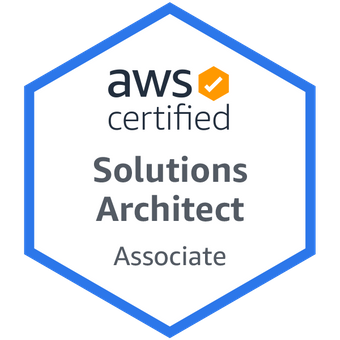
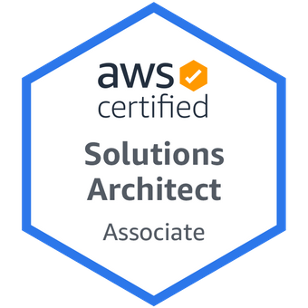

|
Senior Solutions Architect "I love building things in the cloud or at home!" |
|
I'm a Solutions Architect and enjoy hiking with my family, playing golf, and learning new technologies. Prior to AWS, I worked at Palo Alto Networks as a Cloud Security Engineer supporting their largest customers: PWC, AON, and eBay onboarding and scaling their Cloud Security SASE (Secure Access Secure Edge) solution. Prior to that I worked at three startups back to back (Cloudgenix - a SD-WAN company, Webscale Networks - a cloud based Application Delivery Controller for e-commerce companies; and MapR Technologies (now HPE) a Big Data and Analytics data platform). I’ve worked in both pre and post sales roles that included both individual contributor and management positions. I have built Technical Support Organizations, but I enjoy mostly in rolling up my sleeves and getting in the trenches with customers and finding thems solutions to achieve their business outcomes.
Education, Training, and Certifications
- Computer Training Academy - CTA
- Solutions Architect Associate - 01/2021
- AWS Certified Cloud Practitioner - 12/2020
 
Work Experience
| Date | Company | Role |
| Oct 2020 - Present | AWS | Sr Solutions Architect |
| May 2019 - Oct 2020 | Palo Alto Networks | Cloud Security Engineer |
| Apr 2017 - May 2019 | CloudGenix | Customer Satisfaction Engineer |
| Sept 2016 - April 2017 | Webscale Networks | Sales Engineer |
| Dec 2011 - Sept 2016 | MapR Technologies | Sr Support Manager |
Skills
| Category | Level | Category | Level | Category | Level |
|---|---|---|---|---|---|
| Networking | ⭐️⭐️⭐️⭐️ | Security | ⭐️⭐️⭐️ | Containers | ⭐️⭐️⭐️ |
| IP Routing | ⭐️⭐️⭐️⭐️ | SD-WAN | ⭐️⭐️⭐️⭐️ | Linux | ⭐️⭐️⭐️⭐️ |
| Multicast | ⭐️⭐️⭐️⭐️ | Amazon Web Services | ⭐️⭐️⭐️⭐️ | LAN/WAN Designs | ⭐️⭐️⭐️⭐️ |
| BGP (Border Gateway Protocol) | ⭐️⭐️⭐️⭐️ | VPN IKE/IPSEC | ⭐️⭐️⭐️⭐️ | CDN (Content Delivery Networks) | ⭐️⭐️⭐️⭐️ |
| IP Routing | ⭐️⭐️⭐️⭐️⭐️ | TCP/UDP | ⭐️⭐️⭐️⭐️ | SSL | ⭐️⭐️⭐️⭐️ |
Hobbies
- Hiking
- Fantasy Football
- Home DIY projects
- Woodworking projects
Volunteer Experience
- Feed My Starving Children - Food packet distributor - May 2015
- Love Your Neighbor Project - Venture Christian Church - May 2016
My family and I donated our time to help "Feed my Starving Children" to assemble food packs for the hungry children around the world. It was a amazing time in a team environment where we competed against other teams of volunteers. I would recommend this to anyone and everyone, to be a part of and help others.
I worked with "Love our Neighbor" project through Venture Christian Church in rebuilding a older gentleman's fence who had a stroke. Other projects like painting and water damage restoration, and many more, were done to beautify this mans home and make it safe for him. It was a great experience and I would definitely do it again.
Contact Me